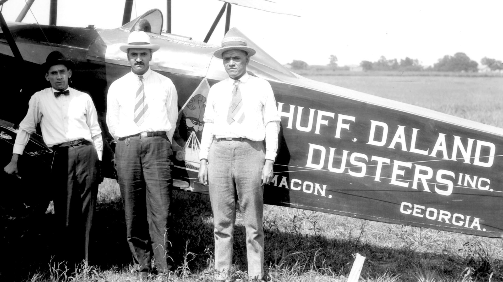
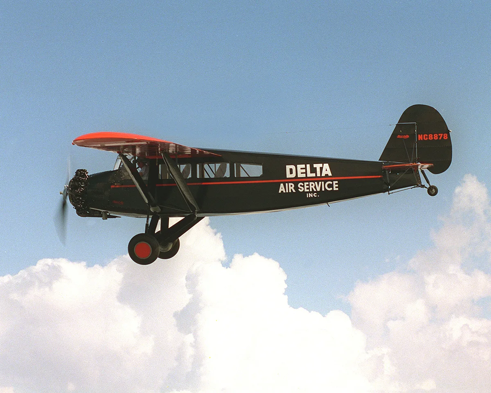
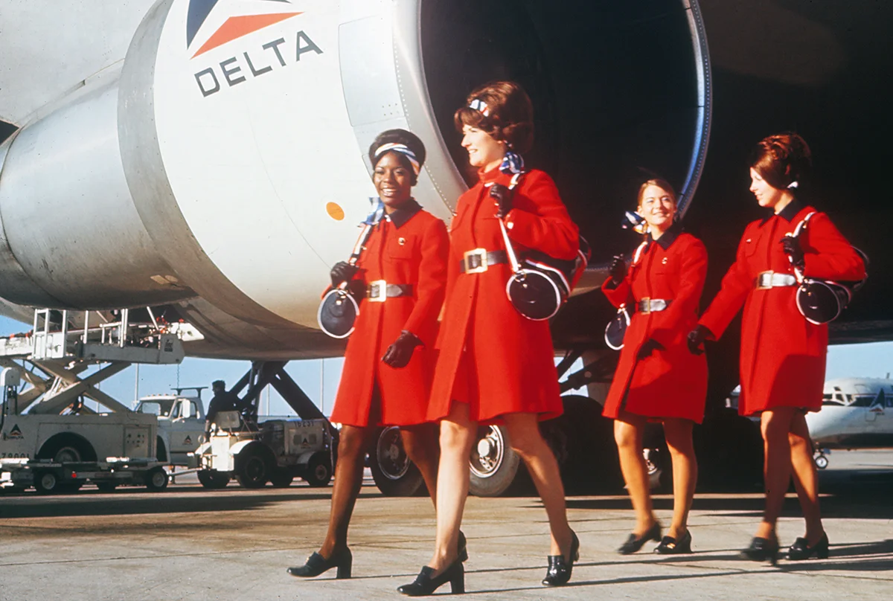

Delta Air Lines was first founded as the Huff Daland Dusters, a crop dusting company for fields.

At 8 a.m. on June 17, 1929, Delta's first passenger flight with a Travel Air S-6000B.

In 1961, Delta opened their first international routes to the Caribbean and Caracas.